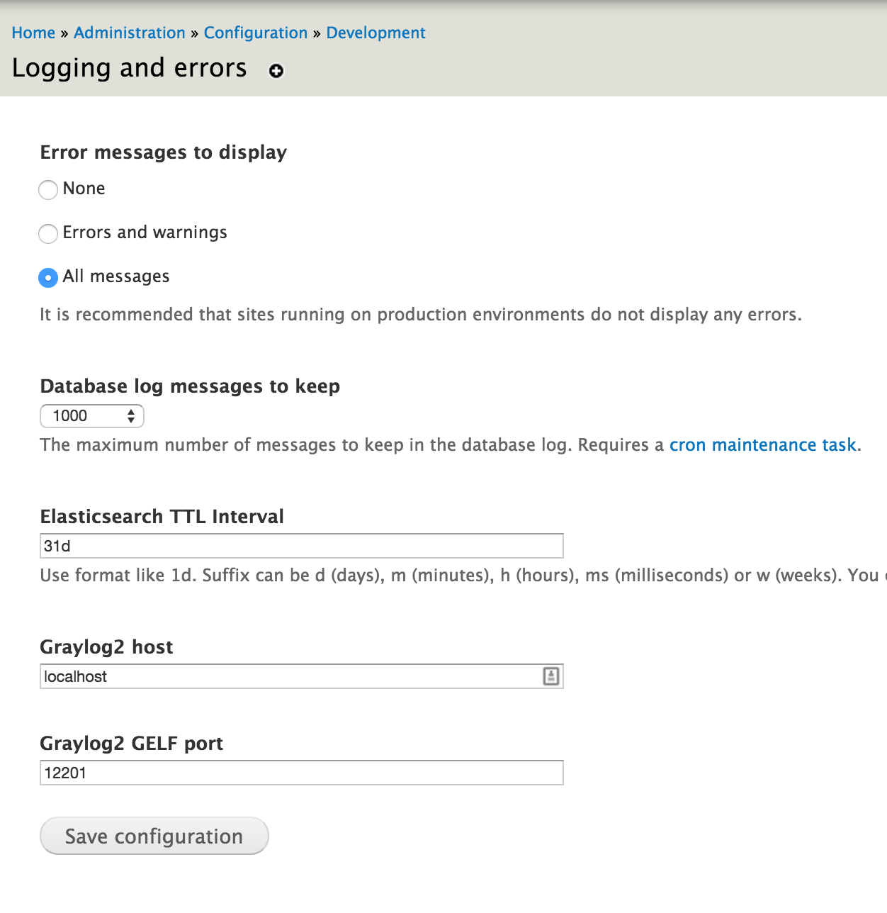

How I learned to love Elasticsearch

A love story, by @tizzo y @nstielau
Nick Stielau
@nstielau
Director of Engineering at Pantheon
Smooth operator
Howard Tyson
@tizzo
Zivtechnician
We're going to make you love Elasticsearch
How we'll do it
- Elasticsearch Overview
- Search Engine Comparisons
- CLI Examples
- Fancypants Use-cases
- Drupal and Elasticsearch
- Devops and Elasticsearch
- Playing with Drupal log commits
Slides, examples, demos
https://github.com/tizzo/drupal-elasticsearch-talk
Elasticsearch is..
a distributed, open source search and analytics engine, designed for horizontal scalability, reliability, and easy management.
Distributed
"Elasticsearch allows you to start small and scale horizontally as you grow. Simply add more nodes, and let the cluster automatically take advantage of the extra hardware."
Open source
The Apache License (/əˈpætʃi/) is a free software license written by the Apache Software Foundation (ASF). The Apache License requires preservation of the copyright notice and disclaimer.
Document-oriented
- No pre-defined schema
- Allows nested documents
Near Realtime*
*The difference between realtime and near-realtime is that near-realtime is not realtime.
Built on Apache Lucene™
Lucene is the search smarts
Clusterable

Clusterable: Data security
"make sure you mention that elasticsearch is a very good primary data store for critical mutable data." - @joemiller
"To be precise, Elasticsearch’s transaction log does not put your data safety first. It puts it anywhere from zero to five seconds later." -Aphyr
Dude, I've been searching for nodes since like, 2005
ES vs. MySQL Full-text Search
This works out-of-the-box, but it can
- Hit the database hard
- Be slow
- Uninspired search results
ES vs. Solr
- How does it compare Solr?
- Both Apache 2 Licensed
- Both supported by commercial orgs
- Both support HTTP indexes
- Competition makes stuff better!
- http://solr-vs-elasticsearch.com/
"I guess comparing Elasticsearch to Solr is apples to apples, but really it's like comaping a new apple to a rotten apple." -Elasticsearch User
ES vs.
Bonus! sane capitalization
sane...
<?php captial_E_duh( "Elasticsearch" );uh...
<?php capital_P_dangit( "WordPress" ); ?>Ain't no Party like a cURL Party
Create an index (curl)
curl -XPUT 'http://localhost:9200/logstash-commits/' -d '
index:
number_of_shards : 1
number_of_replicas : 2
'
curl 127.0.0.1
Inserting docs
Request:curl -XPOST "http://localhost:9200/logstash-commits/logs" -d' {
"commit": "bfdcc65a85a2ae3af5025f8d0a05779fbb59c621",
"committer_name": "xjm",
"author_name": "xjm",
"date": "Tue May 12 15:14:13 2015 -0700",
"message": "Issue-2459777 fixing stuff",
"@timestamp": "2015-05-12T15:14:13-07:00"
}'
{
"ok": true,
"_index": "logstash-commits",
"_type": "logs",
"_id": 1,
"_version": 1
}
Updating docs
Request:curl -XPUT "http://localhost:9200/logstash-commits/logs/1" -d' {
"commit": "bfdcc65a85a2ae3af5025f8d0a05779fbb59c621",
"committer_name": "xjm",
"author_name": "xjm",
"date": "Tue May 12 15:14:13 2015 -0700",
"message": "Issue-2459777 fixing stuff",
"@timestamp": "2015-05-12T15:14:13-07:00"
}'
{
"ok": true,
"_index": "logstash-commits",
"_type": "logs",
"_id": 1,
"_version": 2
}
Retreiving a doc
Request:curl -XGET "http://localhost:9200/logstash-commits/logs/1"
{
"_index": "logstash-commits",
"_type": "logs",
"_id": 1,
"_version": 2,
"exists": true,
"_source": {
"commit": "bfdcc65a85a2ae3af5025f8d0a05779fbb59c621",
"committer_name": "xjm",
"author_name": "xjm",
"date": "Tue May 12 15:14:13 2015 -0700",
"message": "Issue-2459777 fixing stuff",
"@timestamp": "2015-05-12T15:14:13-07:00"
}
}
Searching
Find commits by xjm matching 'Views'
Query: Views
Filter: xjm
curl -XPOST "http://localhost:9200/_search" -d'{
"query": {
"query_string": {
"query": "message:Views"
}
},
"filter": {
"term": {"author_name": "xjm"}
}
}'

BRING IT!
Clarks' Laws vis-á-vis ES
- When a distinguished but elderly scientist states that something is possible, he is almost certainly right. When he states that something is impossible, he is very probably wrong.
- The only way of discovering the limits of the possible is to venture a little way past them into the impossible.
- Any sufficiently advanced technology is
indistinguishable from magic.
Histogram

Example: Score boosting
Scenario:Weight search results by popularity.
Solution:Use `function_score` with a decay function
- Every 2h, query Google Analytics
- Update custom field: "ga_rank" = RANK
- Use `function_score` multiple natural score by "ga_boost"
"DECAY_FUNCTION": {
"FIELD_NAME": {
"origin": "0",
"scale": "100"
}
}
Percolate
Store a queries and then use documents to find matching queries
Turn your search frown upside down
Percolate

Percolate: Store a Query
curl -XPUT 'localhost:9200/logstash-commits/.percolator/security' -d '{
"query" : {
"match" : {
"message" : "(message:XSS OR message:security)"
}
}
}'curl -XPUT 'localhost:9200/logstash-commits/.percolator/admin_ui' -d '{
"query" : {
"match" : {
"message" : "(message:admin AND message:UI)"
}
}
}'
Percolate: Query for matches
Define query-matching for admin UI and security commits:
curl -XGET 'localhost:9200/logstash-commits/logs/_percolate' -d '{
"doc" : {
"message" : "Issue #27230: Fix XHTML slash in XSS filter"
}
}'
Percolate: Get results
{
"took" : 19,
"_shards" : {
"total" : 5,
"successful" : 5,
"failed" : 0
},
"total" : 1,
"matches" : [
{
"_index" : "logstash-commits",
"_id" : "security"
}
]
}
Integrating Drupal with Elasticsearch
Drupal Modules
Search API Elasticsearch
The Good
Really complete integration with all of Search API's features
The Bad
It's really not mature, too many bugs to really use on a project
Elasticsearch Connector
The Good
- A nice framework and API for defining and managing ES clusters/indices
- Views Integration
- Statistics
The Bad
- Incomplete (but less buggy) Search API integration
Log aggregation
Logs HTTP
Log directly to Elasticsearch

GELF
Log to Logstash, let it log to elasticsearch
Custom Code

Custom Code

Devops <3 ES
ELK Stack
- Logstash
ELK
The killer app for ElasticSearch
- Logstash: Get data form an input, mutate it, send it to an output
- ElasticSearch: Index the JSON documents into a really useable format
- Kibana: Build interactive dashboards for exploring your data
Getting my data into ELK
- @amitaibu's Logs HTTP Module
- System (syslog, journald)
- tcp, http, udp, varnishlog, file
- And more
Munging with Logstash
the richer the better!
This messageIssue #27230: Fix XHTML slash in XSS filter
grok { match => ["message", "Issue #%{NUMBER:issue_id}: %{GREEDYDATA:message}" ] }
{
"issue_id": "27230",
"issue_message": "Fix XHTML slash in XSS filter",
"message": "Issue #27230: Fix XHTML slash in XSS filter"
}
What could you do with data?
- Actionably address errors
- Diagnose outage causes
- Investigate a security breach
- Identify attacks in progress
- Alert on abnormal activity
ELK Demo
ES Errata
Securing ES
- install updates
- firewall with iptables
- run Kibana behind HTTPS
- run Elasticsearch behind HTTPS
- More info from brudtkuhl.com
Hosted ElasticSearch
Criteria
- Is the hosted ES near your servers?
- Does the price work out for the amount of data you have?
- Does the provider allow customer configuration/tuning?
- Does the provider understand distributed systems, etc
Providers
- https://qbox.io/
- https://www.compose.io/elasticsearch/
- https://www.found.no/
- https://bonsai.io/